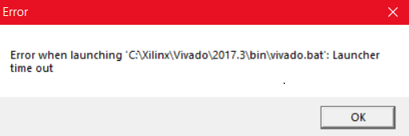

Vivado 2017.3 启动超时
Vivado启动两分钟后弹出如下界面，显示Vivado启动超时：

我是在更新了Windows10系统到1790版本后出现这一问题，在Xilinx论坛发现同一问题，Xilinx官方也发现并解决了这个BUG。
After installing the Windows 10 Fall Creators update (version 1709), when I try to launch Vivado, it fails or crashes.
解决方法如下AR# 69908：
While this update for Windows 10 is not officially supported with Vivado 2017.3, the following work-around is available:
- Navigate to (Vivado Installed Directory)\2017.3\bin\unwrapped\win64.o
- Backup ‘vivado.exe‘ by renaming it to ‘vivado.exe.backup‘
- Copy ‘vivado-vg.exe‘ and paste it into the same folder.
- Rename ‘vivado-vg - Copy.exe‘ to ‘vivado.exe‘
简单翻译一下：
当Windows10更新之后发现不能打开Vivado时，执行以下步骤：
- 进入“Vivado安装目录\2017.3\bin\unwrapped\win64.0\”
- 将’vivado.exe‘重命名为vivado.exe.backup‘
- 将’vivado-vg.exe‘ 复制到当前目录
- 重命名’vivado-vg - Copy.exe‘为’vivado.exe‘
之后再打开Vivado就不会报错了